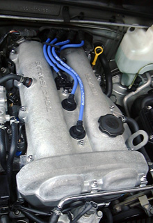
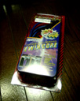
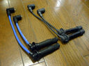
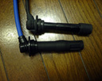
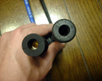
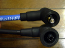
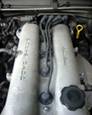
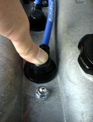

平成２年式なので、１度も交換していなければもう１０年以上使っていることに
なります。走行距離はまだ５万キロちょっとですが、そろそろゴムやオイル等、
劣化しやすい材質でできた部品や苛酷な環境下にある部品が心配になってくる頃
です。とりあえず手短なところで、エンジンのスパーク・プラグがあります。劣
化が酷くなると暗いところでリークが見えたりするらしいですが、まだそこまで
ではないようです。とりあえずSplitFire製のTWINCORE (TC-MA01)に交換しました。
プラグも同時に交換したので純粋な違いはわかりませんが、吹き上がりが良くなったようです。
 |
ショップに電話で発注後、２日くらいで届いた。
|
||||||||
 |
左の青いのがTWINCORE、右が純正 |
||||||||
 |
プラグ側 外観は一見かわらないが、材質はTWINCOREの方がシリコン製でよさそうな感じ。 でも、コードのつけねのブーツ部分が純正の方がしっかりしている。 TWINCOREの方は引っ張ると簡単に抜けてしまい、プラグからは抜きづらい。 |
||||||||
 |
プラグ側のコネクション部分 こっちはあんまりよくわからない。でもTWINCOREのシリコンゴムはいい感じ。 |
||||||||
 |
イグニッションコイル側のコネクション部分 これは明らかにTWINCOREの方がしっかりした構造になっている。 |
||||||||
 |
ちなみにノーマルのコード。イグニッションコイルに取り付ける順番は、 向かって右から(助手席側から)４、１、２、３の順(B6の場合)、シリンダは 手前がら１、２、３、４となっている。 |

初めにコードを交換したときエンジンの調子が悪くなってしまい、プラグを抜い てみると４番のシリンダ内に液体(水？)が溜っていました。コードが変わったせ いで電気的に何か悪い影響があったわけではなく、エンジンルームを洗浄した際 にプラグコードのブーツの隙間から水が入ってしまったのかもしれません。 エンジンを温めてからプラグコードを抜いて半日くらいたったら乾いたようで、 エンジン内で水漏れなどが起きたわけではないようです。 メカドックで圧縮圧力 を測定してくれましたが、全シリンダとも約13kg/cm^2-300rpmでコンロッドが曲がっ て圧縮力が下がってしまったりといったことはないようです。 純正のコードはブーツがしっかりしていて、コードの抜き差しがやりやすいです が、TWINCOREの方はただカバーが被っているだけという感じです。しかしコード を取り付けた際、このカバー部分を写真のように強く押し込むようにしてやると、 吸盤のようにヘッドカバーの穴に吸い付くので、もしかしたら純正より水や埃の 侵入を防げるかもしれません。 ところで、今回シリンダ内をチェックするために何度かプラグをはずしていまし たが、その際プラグの６角ナット？をなめてしまい、プラグが抜けなくなっ てしまいました。眠いときはあんまり無理をしない方がいいな.. メカドックではずしてもらいまし たが、15.5mmくらいのソケット(プラグに付いているナットは16mm)をたたき込 んで、一気に回してはずすんだそうです。 うーん。安くて強度があまり高くないソケットはこういう用途に向くのかもしれ ない..ｂｙ すすたわり